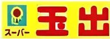
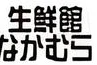
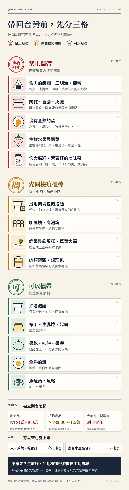

PART 1關西超市價位地圖
日本網路上流傳一張「關西超市分類表」，依價位高低與店舖規模把 50 多家超市排在同一張圖上。我們把它重新整理成標誌加店名的版本，方便手機閱讀與搜尋。
一張圖看懂價位
- 頂級價位最高
- 高級精品・進口食材
- 成城石井（看介紹）
- TOP WORLD
- Pantry
- FREST
- CO·OP
- 中高價位一分錢一分貨
- Toho
- デイリーカナート
- 関西スーパー（看介紹）
- KINSHO
- KYOTO COOP
- AEONイオン（看介紹）
- KOHYO（看介紹）
- 阪急OASIS（看介紹）
- SEIYU西友（看介紹）
- ライフ（看介紹）
- HEIWADO平和堂
- Izumiyaイズミヤ（看介紹）
- 中價位不貴也不便宜
- 新鮮激安市場
- アプロ
- FRESCO
- マルハチ
- MaxValu（看介紹）
- フレンドマート
- マルアイ
- gourmet city
- MARUYASU
- ナショナル
- Sunplaza
- Fresh Bazaar
- マツゲン
- マルナカ
- オークワ
- daieiダイエー（看介紹）
- 平價在地庶民派

玉出スーパー玉出（看介紹）
生鮮館なかむら- コノミヤ（看介紹）
- satake
- 万代mandai（看介紹）
- ロピアLOPIA（看介紹）
- マツモト
- Evergreen
- 折扣量販大包裝・量販型
- 超低價價格最低
七個價位帶怎麼讀
- 頂級阪神間高級住宅區的代表。進口食材、自製熟食與甜點，價格最高但品質穩定。
- 高級百貨公司系或精品型超市。進口葡萄酒、起司、講究的調味料，送禮自用都適合。
- 中高價位電鐵沿線與大型連鎖的主力帶。品項齊全、熟食選擇多，日常採買最常遇到。
- 中價位地區型連鎖最多的一帶。價格中庸，各家常靠特賣日、點數活動拉客。
- 平價在地人日常買菜的地方。生鮮便宜、熟食份量大，店內氣氛熱鬧。
- 折扣量販大包裝、冷凍食品、量販型大型店。人多或長住時 CP 值最高。
- 超低價用紙箱陳列、精簡服務換取低價。適合只看價格的採買。
PART 2依用途挑超市
逛日本超市本身就是旅行的一部分。先想好這次要買什麼，再決定往哪個價位帶走，比較不會白跑一趟。
買伴手禮・精緻熟食
對應：頂級、高級帶
いかり、成城石井這類超市的自家品牌點心、果醬、咖啡，包裝講究、價格明確，比觀光區的伴手禮店更有在地感。熟食與麵包也常是自家廚房現做，適合在飯店吃一頓不踩雷的晚餐。
住宿附近日常補給
對應：中高、中價位帶
ライフ、阪急OASIS、関西スーパー、AEON 這類連鎖分布廣，水果、飲料、優格、便當、沙拉一次買齊。價格和品質都在中間值，第一次逛日本超市就從這裡開始最不會失手。
多人同行・有廚房
對應：平價、折扣量販帶
業務スーパー的大包裝冷凍食品、ロピア的大份量肉品，人多分一分反而最划算。住民宿或公寓式酒店時特別好用；只住飯店的話，小心買太多吃不完。
預算有限・只要便宜
對應：平價到超低價帶
万代、コノミヤ、玉出、サンディ、ラ・ムー這類超市，飲料、零食、泡麵的價格常比便利商店低一截。環境比較陽春，有的只收現金，結帳前先確認付款方式。
PART 3常見連鎖超市速覽
從地圖中挑出 13 個旅客最容易遇到的連鎖。資料整理至 2026 年 10 月，店數以各來源的統計時間為準。
顯示全部 13 家
頂級
いかりスーパーいかりスーパーマーケット
找分店阪神間的老牌高級超市，自製熟食與點心是招牌
- 1961 年創業，本社在兵庫縣尼崎市；分店以兵庫為主，大阪、京都也有。
- 自家工廠的手工麵包、西式甜點，以及自營中華料理店主廚監修的熟食。
- 自家品牌鬆餅粉、冰咖啡，直接進口的葡萄酒與起司。
適合：想買包裝體面的伴手禮，例如自家品牌的蘆屋瑪德蓮、布朗尼等烘焙點心。
高級
成城石井成城石井
找分店從東京成城起家的「講究型」超市，進口酒與起司選擇多
- 1927 年在東京世田谷區成城創業，現在本社位於橫濱。
- 截至 2026 年 2 月共 226 家超市，另經營葡萄酒吧。
- 集製造、進口、批發、零售於一身，有自己的中央廚房做熟食。
適合：找進口葡萄酒、起司、零食，或在飯店配一份質感好的熟食晚餐。
中高價位
ライフライフ（LIFE）
找分店大阪與東京雙總部的大型連鎖，走到哪都容易遇到
- 1961 年第一家店開在大阪豐中；本社分設大阪與東京。
- 2025 年 10 月共 316 家：近畿 170 家、首都圈 146 家。
- 生鮮、熟食、麵包到日用品都有，品項齊全。
適合：住宿附近的日常補給：水果、飲料、熟食便當一次買齊。
中高價位
阪急OASIS・関西スーパー・イズミヤ阪急オアシス／関西スーパー／イズミヤ
找分店阪急阪神百貨的母公司 H2O 集團旗下，關西街頭很常見的三個招牌
- 三個品牌都屬於 H2O Retailing 集團。
- 2026 年 4 月 1 日起，經營公司整合為「関西フードマーケット」；「関西スーパー」店名繼續使用。
- 在網友原圖中都落在「中高價位」帶。
適合：想在車站附近、住宅區買熟食與生鮮，價格與品質都在中間值。
中高價位
AEON（イオン）イオン
找分店全日本最常見的大型零售集團，常與購物中心結合
- 原圖中的 MaxValu、KOHYO、daiei 也都是 AEON 集團的品牌。
- 大型店多半設在購物中心內，食品以外還有服飾、藥妝、生活用品。
- 自有品牌「TOPVALU（トップバリュ）」商品線很廣。
適合：一次買齊食物與旅途中缺的日用品，或雨天想逛有屋頂的地方。
平價
万代万代（mandai）
找分店本社東大阪的地區型連鎖，大阪一帶密度很高
- 本社在大阪府東大阪市，1962 年成立。
- 2026 年 1 月共 170 家，其中大阪 115、兵庫 29、奈良 14、京都 10。
- 自有品牌「万代選品」，主打住家附近 500 公尺到 1 公里的商圈。
適合：住在大阪市郊或住宅區時，買便宜的生鮮與熟食。
平價
コノミヤコノミヤ
找分店方針寫得很直白：「新鮮、好吃、便宜」
- 店舖分布在大阪、兵庫、京都、奈良，以及愛知、岐阜（2021 年資料）。
- 2021 年時共 91 家，集團年營收超過 1,300 億日圓。
- 基本方針是「新しい、旨い、安い」。
適合：想用平價買到新鮮的魚、肉和熟食。
平價
スーパー玉出スーパー玉出
找分店大阪南部的激安老字號，鮮豔招牌一眼就認得
- 1978 年在大阪市西成區的玉出本通商店街創業。
- 知名促銷「1 円セール」：每月逢 1 的日子，消費滿（稅前）1,000 日圓可用 1 日圓買指定商品。
- 近年持續縮編，2025 年約剩 19 家，營業時間依店而異。
適合：住在大阪南部、想體驗在地激安超市的氣氛。
平價
ロピアロピア（LOPIA）
找分店肉店起家，份量大到像在逛量販店
- 從精肉店起家，肉品區至今仍是人氣重點；鮮魚區以「日本橋魚萬」名義經營。
- 很多商品是大份量包裝，例如 30 顆裝煎餃、500 公克冷凍水果。
- 不少店只收現金，去之前先準備好。
適合：多人同行、住處有廚房，想買大份量肉品或冷凍食品。
折扣量販
業務スーパー業務スーパー
找分店兵庫起家的神戶物產旗下，大包裝與進口冷凍食品聞名
- 經營公司為神戶物產（東證 Prime 上市）。
- 截至 2026 年 7 月共 1,144 家，幾乎全是加盟店。
- 以業務用大包裝、冷凍食品、進口調味料與零食為特色。
適合：長住或多人自炊，或想找便宜的進口零食、調味料。
折扣量販
TRIAL（トライアル）トライアル
找分店九州起家的折扣量販，大型店從食品到家電都賣
- 1992 年開出第一家「トライアル」折扣店，以九州為據點。
- 主力是大型「Supercenter」，另有食品為主的小型業態。
- 2025 年 7 月把西友（SEIYU）納為子公司，向首都圈擴張。
適合：住郊區或自駕時順路採買，食品以外的日用品也能補齊。
超低價
サンディサンディ
找分店把德國 Aldi 的「箱型店」帶進日本，陳列直接用紙箱
- 本社在大阪市淀川區，1980 年成立。
- 2023 年 6 月共 212 家，大阪就有 134 家，也分布在兵庫、京都、奈良。
- 用紙箱、棧板陳列以壓低成本；購物袋早在全國收費前就不免費提供。
適合：只想用最低預算買飲料、零食與基本食材。
超低價
ラ・ムーラ・ムー（LAMU）
找分店100 日圓章魚燒聞名的折扣超市，以西日本為主
- 經營公司為大黑天物產，主打「便宜進貨、便宜賣」。
- 原則上 24 小時營業（部分店舖與新年期間除外）。
- 付款以現金與自家電子支付為主，信用卡不一定能用。
適合：深夜想買宵夜，或想試試銅板價熟食。
PART 4結帳與採買小技巧
六個實用提醒
- 自備購物袋
日本從 2020 年 7 月起塑膠購物袋全面收費，結帳時店員會問要不要袋子。摺疊環保袋放包包裡最方便。
日文：袋はいりません（不用袋子）／袋ください（請給我袋子）
- 看清楚「税込」價
價格牌常同時標示稅前（税抜・本体価格）與含稅（税込）價，有時稅前的字還比較大。結帳時付的是「税込」金額。
日文：税込（含稅）／税抜（未稅）
- 傍晚後的折扣貼紙
熟食、便當、生鮮常在傍晚之後貼上「○割引」或「半額」貼紙，時間每家店不同。想撿便宜可以晚一點去，但熱門品項可能已經賣完。
日文：半額（半價）／2割引（打 8 折）
- 先確認付款方式
大型連鎖多半可以刷卡或用交通 IC 卡，但部分折扣超市只收現金或自家支付。排隊前看一下收銀台上的標示。
日文：カード使えますか？（可以刷卡嗎？）
- 自助與半自助結帳
「セルフレジ」是自己刷條碼和付款；「セミセルフ」是店員刷條碼，你再到旁邊的機器付款。買酒要確認年滿 20 歲，自助結帳時店員會過來確認。
日文：セルフレジ／お支払いはあちらです（請到那邊付款）
- 退稅規則看清楚
超市不一定是免稅店，要退稅請先確認店家有「Tax-Free」標示。2026 年 11 月 1 日起改為「先付後退」，細節請看新制總整理。
PART 5超市食品帶回台灣：檢疫判讀
日本超市的熟食、零食很好買，但回台灣入境時，含肉、未全熟的蛋、新鮮蔬果是最常被查獲的三類。結帳前先對照下面的三格，最安全。
一張圖分三格

🚫 禁止攜帶
- 含肉的飯糰、三明治、便當、麵包炸雞、唐揚げ、肉包、熟食區的炸豬排或烤雞串都算。雞肉蛋白棒、雞皮零食也在其中。
- 肉乾、香腸、火腿、肉鬆真空包裝或密封零食一樣不行，包裝完整不代表可以帶。
- 沒有全熟的蛋溫泉蛋（温泉卵）、溏心蛋（味付け玉子、半熟卵）、生蛋都不行。蛋黃蛋白完全凝固的全熟蛋才可以。
- 生鮮水果與蔬菜包括草莓、葡萄、哈密瓜等伴手禮水果，以及飛機餐附的水果和生菜，下機前要吃完或丟掉。
- 含大麻籽或罌粟籽的七味粉這是依《毒品危害防制條例》管制，不只是檢疫問題。買之前看成分表，出現 麻の実・おのみ・あさのみ・麻種・けしの実・ケシの実・芥子 就不要買；只有唐辛子、陳皮、芝麻、山椒、紫蘇、生薑、青海苔的版本比較安全。
❓ 先問檢疫櫃檯
- 另附肉塊包的泡麵只有粉包、油包的泡麵原則上可以帶；如果另外附一包肉料，請在櫃檯確認。
- 咖哩塊、高湯塊、拉麵湯包成分有牛肉、豬肉萃取物（ビーフエキス・ポークエキス）的，結果可能不同。
- 有新鮮水果的甜點水果蛋糕、草莓大福（いちご大福）、水果三明治，裡面的水果是生鮮的。
- 肉類罐頭、調理包依殺菌方式與包裝個案判定，不要自己猜。
✅ 可以攜帶
- 沖泡泡麵、泡飯、速食粥只有粉包、油包，原則上免檢疫。
- 布丁、生乳捲、起司屬於加工乳製品。布丁算不算液體，由機場安檢判定。
- 果乾、柿餅、果醬已經加工，不是新鮮水果。
- 全熟的蛋例如鐵蛋、茶葉蛋，蛋黃蛋白都凝固。
- 魚罐頭、魚鬆等加工水產品生鮮或冷藏的魚另有規定。
罰則與數量上限
- 米、茶葉、乾香菇、熟花生、熟蒜頭、乾金針：各 1 公斤以內。
- 農畜水產品合計 6 公斤以內；自用食品價值超過 US$1,000 或超過 6 公斤，需事先申請輸入許可。
- 只要從非洲豬瘟疫區帶入豬肉產品，初犯就罰 20 萬元、再犯 100 萬元；疫區名單依防檢署公告，轉機或順遊其他國家時要特別注意。
入境時怎麼做
- 出發前加入農業部防檢署官方 LINE，輸入關鍵字（例如「肉乾」）就能查能不能帶。
- 結帳前翻到包裝背面看「原材料名」：有「豚」「牛」「鶏」「肉」或「エキス」的先停一下；七味粉找「麻の実」「けしの実」；蛋類商品看有沒有「半熟」「温泉」。
- 下飛機後還沒想清楚的東西，可以先丟進入境區的檢疫丟棄桶。
- 通關時不確定就走紅線，到「動植物檢疫」櫃檯主動申報；判定不合格只會銷毀，不會受罰。走綠線被查到，就可能被開罰。
使用前請確認
📌 提醒：店數、營業時間、付款方式與促銷活動常有變動，同一品牌各分店也不盡相同，請以各店官方網站與現場公告為準。價位地圖為網友主觀印象，僅供參考。檢疫規定以農業部動植物防疫檢疫署與財政部關務署最新公告為準，現場判定以檢疫人員為準。